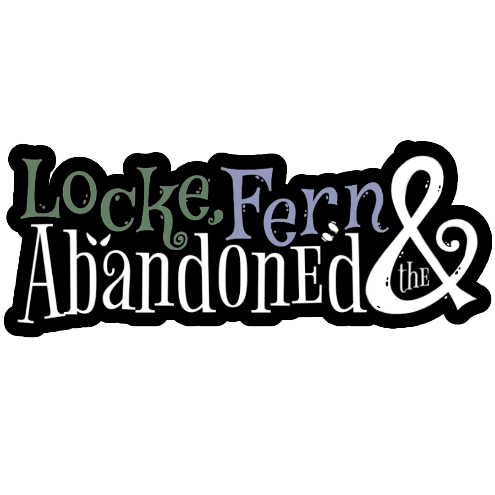
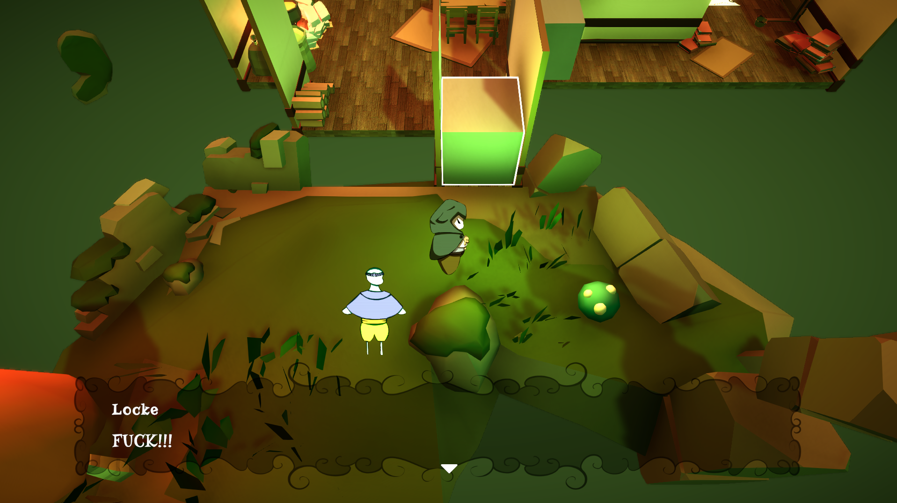

Development Time:
30.01.2026 - 01.02.2026
My Roles:
- Programmer (Unreal/Blueprints)
Team Members:
- Julia Cordes (me)
- Matej Budimir
- Lukas Niemann
- Maurice Strübe
Caretaker is a small horror game in which you play as the caretaker of an elderly person, complete tasks, and un-mask the house you are working in.
Description
For the Global Game Jam 2026, the prompt was "Mask". Our team decided to create a horror-game inspired by Fears to Fathom or Chilla's Art games, where you'd finish tasks over the span of seven days, with weirder and weirder things happening over time.
During this Game Jam, I focused fully on programming and programmed the whole game, except for the shaders.
Picture Gallery
